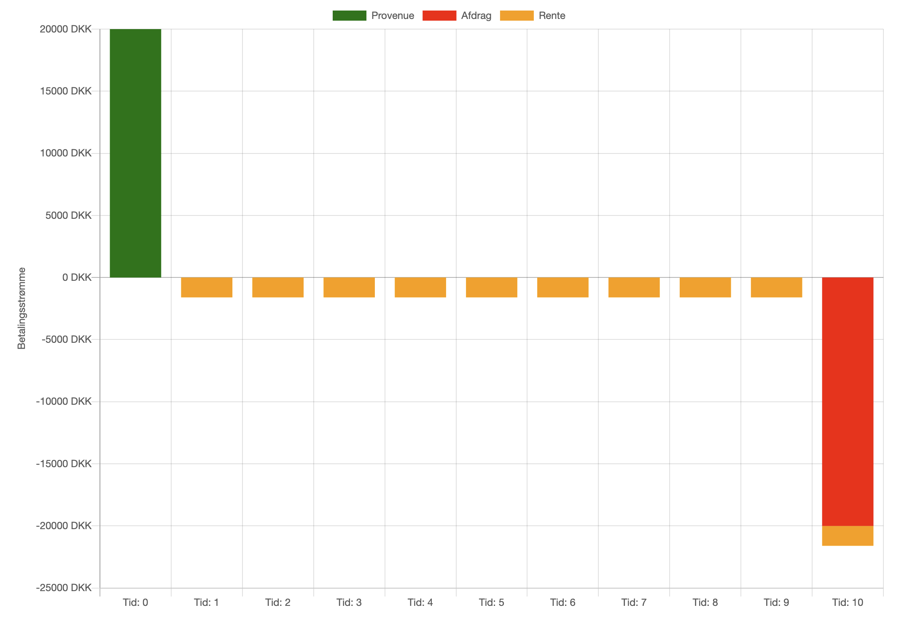
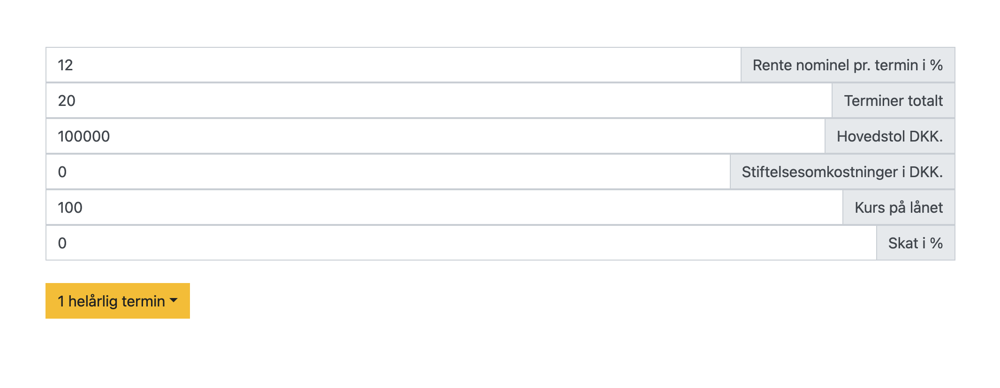
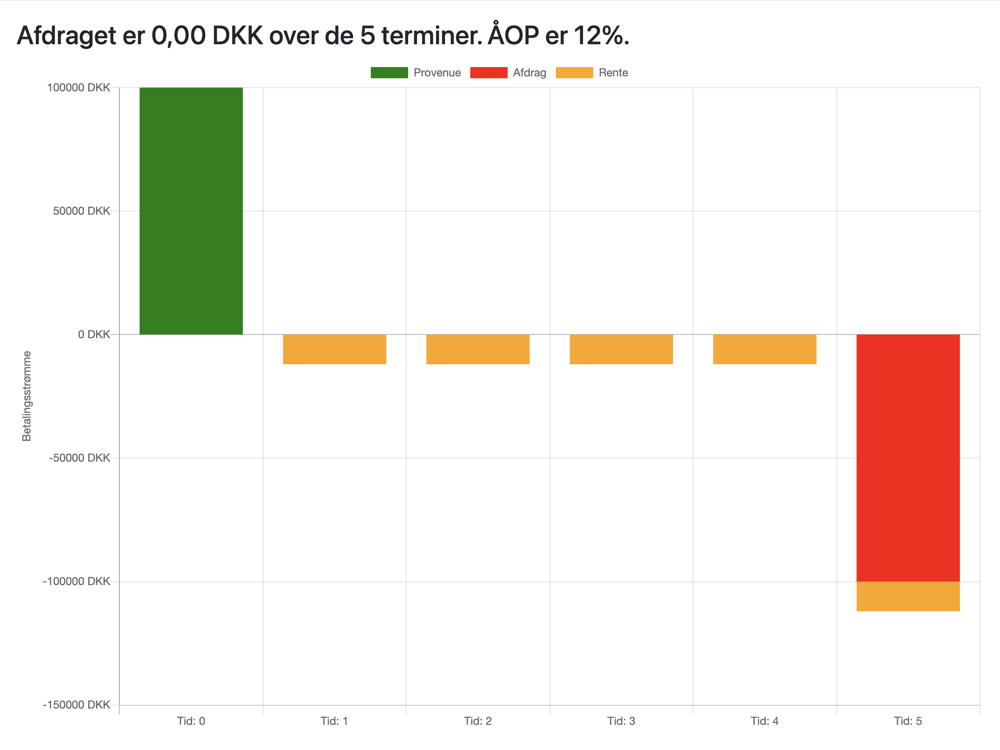
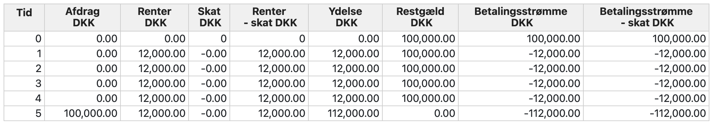
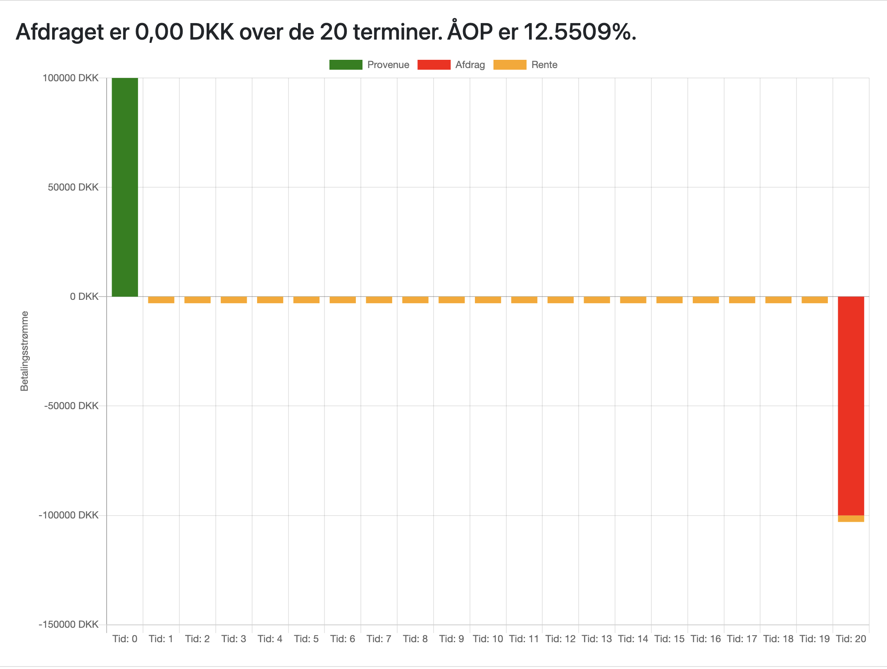
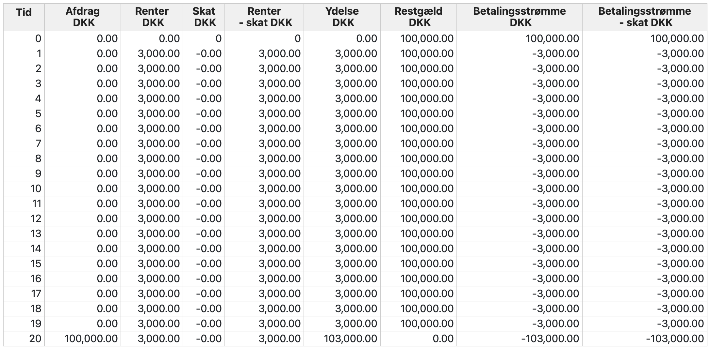
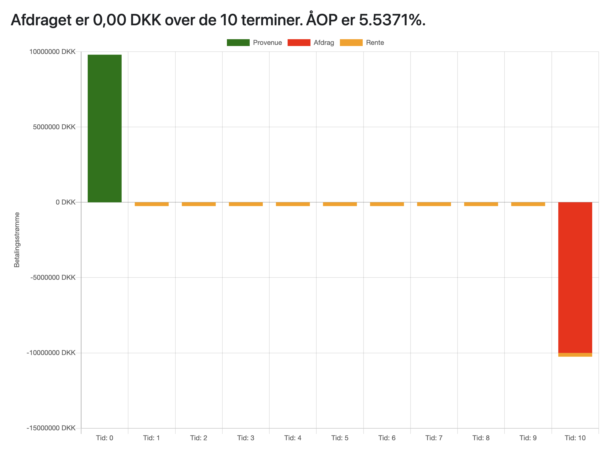
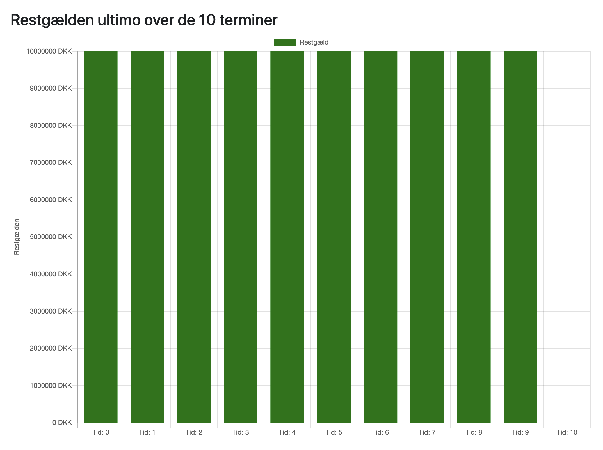
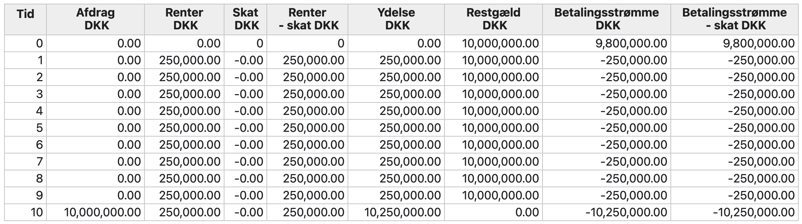

Stående lån
Et stående lån også kaldet et afdragsfrit lån, er en type lån, hvor låntager kun betaler renter i
lånets løbetid og tilbagebetaler
hele
hovedstolen ved lånets udløb. Dette er i kontrast til annuitetslån og serielån, hvor der løbende
afdrages på
hovedstolen.
Kendetegn ved et stående lån:
- Ingen løbende afdrag på hovedstolen
- Faste rentebetalinger gennem hele lånets løbetid
- Hovedstolen tilbagebetales som et engangsbeløb ved lånets udløb
- Lavere løbende ydelser sammenlignet med andre lånetyper
Anvendelser af stående lån:
- Ejendomsinvesteringer med forventning om værdistigning
- Virksomhedsfinansiering ved forventning om fremtidig vækst
- Kortfristet finansiering af projekter
- Refinansiering af eksisterende gæld
Låneprofiler
Herunder er profiler for de 2 lånetyper stående lån og annuitetslån.
Bemærk ved det stående lån betales kun renter (orange søjler) ved alle terminer frem til lånets
udløb, hvor hele
hovedstolen afdrages (rød søjle).
Låntagers likviditet vil alt andet lige belastes mindst ved det stående lån, da ydelserne
udelukkende består af renter af hovedstolen frem til lånets udløb.
Alt andet lige vil långiver prissætte et stående lån dyrere (højere rente) end annuitetslånet
pga. af den
højere risiko,
restgælden svarer til hele hovedstolen i hele lånets løbetid. Herudover vil det totale beløb for
rentebetalingen alt andet lige være større end ved annuitetslånet, hvis der var samme rente på
de to lån. Som nævnt vil låntager dog alt andet lige sætte renten højere på det stående lån
grundet den større
risiko.
Stående lån cashflows

Annuitetslån cashflows

Restgæld Annuitetslån

App til Stående lån
Du kan udregne låneforløbet i Excel eller i en app, herunder er link til App for stående lån
App til Stående lån
Ydelser på et stående lån
Ydelsen for af et stående lån er jo kun renter frem til udløbet af lånet. Så beregningen af disse
ydelser er blot terminsrenten gange hovedstolen. Sidste termin er ydelsen rente + hovedstolen.
Eksempel Stående lån: Årlig rentetilskrivning
| Tekst |
Værdier |
Ydelser frem til sidste termin |
Ydelsen ved sidste sidste termin |
| Ydelserne af et stående lån på 1.000.000 kr. over 5 år med en årlig rente på 12% |
Hovedstol = 1.000.000
Rente = 12%
Rentetilskrivning helårlig
År = 5 |
=1000000*12%
Resultat = 120.000 kr. |
=1000000*12% + 1000000
Resultat = 1.120.000 kr. |
Med app:
Stående lån cashflows

Stående lån cashflows

Stående lån cashflows

|
Eksempel Stående lån: kvartalsvis rentetilskrivning
| Tekst |
Værdier |
Ydelser frem til sidste termin |
Ydelsen ved sidste sidste termin |
Ydelserne af et stående lån på 1.000.000 kr. over 5 år
med en nominel årlig rente på
12%
p.a. kvartalsvis rentetilskrivning. |
Hovedstol = 1.000.000
Terminsrente = 12%/4 = 3%
Rentetilskrivning kvartalsvis
År =
5
Terminer ialt = 5*4 = 20 |
=1000000*3%%
Resultat = 30.000 kr. |
=1000000*3% + 1000000
Resultat = 1.030.000 kr. |
Med app:
Stående lån cashflows

Stående lån cashflows

|
Finansieringscase: Stående lån til ejendomsinvestering
NordInvest A/S ønsker at investere i en erhvervsejendom. De har brug for at låne 10.000.000 kr. til
køb af
ejendommen og planlægger at sælge den igen efter 5 år.
Banken tilbyder følgende lånebetingelser for et stående lån:
- Hovedstol: 10.000.000 kr.
- Løbetid: 5 år
- Nominel rente: 5% p.a.
- Terminer: Halvårlige
- Kurs: 98,5
- Stiftelsesomkostninger: 50.000 kr.
NordInvest ønsker at beregne følgende:
- Beregn den halvårlige rentebetaling i kr.
- Udregn kurstabet i kroner
- Beregn det faktiske provenu, som NordInvest A/S modtager efter kurstab og stiftelsesomkostninger
- Beregn ÅOP
- Lav en oversigt over alle ydelser i lånets løbetid
- Beregn den samlede tilbagebetaling over lånets løbetid
Løsninger:
1. Beregning af halvårlig rentebetaling
| Beregning |
Resultat |
| Halvårlig rente = Årlig rente / 2 |
5% / 2 = 2,5% |
| Halvårlig rentebetaling = Hovedstol * Halvårlig rente |
10.000.000 * 0,0250 = 250.000 kr. |
2. Beregning af kurstab
| Beregning |
Resultat |
| Kurstab = Hovedstol * (1 - Kurs/100) |
10.000.000 * (1 - 98,5/100) = 150.000 kr. |
3. Beregning af faktisk provenu
| Beregning |
Resultat |
| Provenu = (Hovedstol * Kurs/100) - Stiftelsesomkostninger |
(10.000.000 * 98,5/100) - 50.000 = 9.800.000 kr. |
4. Beregning af ÅOP
For at beregne ÅOP, bruger vi IA (intern rente IRR på engelsk) funktionen i Excel på
de beregnede
pengestrømme. Vi får en halvårlig ÅOP på cirka 2,7313%.
| Beregning |
Resultat |
| Årlig effektiv rente = (1 + Halvårlig rente)^2 - 1 |
(1 + 0,0273)^2 - 1 = 5,53% |
5. Oversigt over alle ydelser i lånets løbetid
| Termin |
Rentebetaling |
Afdrag |
Restgæld |
| 1 |
250.000 kr. |
0 kr. |
10.000.000 kr. |
| 2 |
250.000 kr. |
0 kr. |
10.000.000 kr. |
| 3 |
250.000 kr. |
0 kr. |
10.000.000 kr. |
| 4 |
250.000 kr. |
0 kr. |
10.000.000 kr. |
| 5 |
250.000 kr. |
0 kr. |
10.000.000 kr. |
| 6 |
250.000 kr. |
0 kr. |
10.000.000 kr. |
| 7 |
250.000 kr. |
0 kr. |
10.000.000 kr. |
| 8 |
250.000 kr. |
0 kr. |
10.000.000 kr. |
| 9 |
250.000 kr. |
0 kr. |
10.000.000 kr. |
| 10 |
250.000 kr. |
10.000.000 kr. |
0 kr. |
6. Beregning af samlet tilbagebetaling
| Beregning |
Resultat |
| Samlede rentebetalinger = 250.000 * 10 |
2.500.000 kr. |
| Tilbagebetaling af hovedstol |
10.000.000 kr. |
| Samlet tilbagebetaling = Rentebetalinger + Hovedstol |
12.500.000 kr. |
Opsamling
NordInvest A/S vil modtage et provenu på 9.800.000 kr. for deres stående lån. De skal betale 250.000
kr. i rente
hvert halve år i 5 år, og derefter tilbagebetale hele hovedstolen på 10.000.000 kr. ved lånets
udløb. De
årlige omkostninger i procent ÅOP er 5,54%, hvilket er højere end den nominelle rente på 5% på grund
af
kurstab,
stiftelsesomkostninger og den halvårlige rentetilskrivning. Den samlede tilbagebetaling over lånets
løbetid bliver
12.500.000 kr.
Et stående lån kan være fordelagtigt for NordInvest A/S, hvis de forventer en værdistigning på
ejendommen, der kan
dække tilbagebetalingen af hovedstolen. Det giver også lavere løbende udgifter sammenlignet med
andre lånetyper,
hvilket kan være gunstigt for virksomhedens likviditet. Dog skal virksomheden være forberedt på at
kunne
tilbagebetale hele hovedstolen ved lånets udløb.
Beregning med app
Stående lån cashflows

Stående lån restgæld

Stående lån cashflows

|
Quiz
Quiz Stående lån
Quiz Stående lån